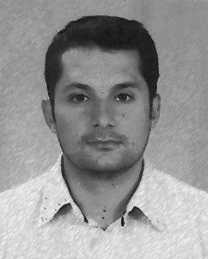

Engineering geologist. I study landslides, debris flows and cascading hazards in tropical mountains, and how to turn that knowledge into early warning and safer cities. Ingeniero geólogo. Estudio los movimientos en masa, las avenidas torrenciales y las amenazas en cascada en montañas tropicales, y cómo convertir ese conocimiento en alerta temprana y ciudades más seguras.
I am an Associate Professor in the Department of Geosciences and Environment at the Faculty of Mines, Universidad Nacional de Colombia, Medellín, where I lead the Geohazards research group. My work combines field geomorphology, physically based models, spatial statistics and machine learning to understand where, when and why landslides and torrential floods occur in the Northern Andes.
Between 2023 and 2025 I was a Georg Forster Research Fellow of the Alexander von Humboldt Foundation at the University of Potsdam, working with Oliver Korup on landslide patterns and landscape evolution in the Colombian Andes. I collaborate with research groups in Europe and Latin America on urban landslide risk, impact-based early warning and cascading hazards.
Soy Profesor Asociado del Departamento de Geociencias y Medio Ambiente de la Facultad de Minas de la Universidad Nacional de Colombia, sede Medellín, donde lidero el grupo de investigación Geohazards. Mi trabajo combina geomorfología de campo, modelos de base física, estadística espacial y aprendizaje automático para entender dónde, cuándo y por qué ocurren los movimientos en masa y las avenidas torrenciales en los Andes del norte.
Entre 2023 y 2025 fui becario Georg Forster de la Fundación Alexander von Humboldt en la Universidad de Potsdam, donde trabajé con Oliver Korup en los patrones de los movimientos en masa y la evolución del paisaje en los Andes colombianos. Colaboro con grupos de Europa y América Latina en riesgo urbano por movimientos en masa, alerta temprana basada en impactos y amenazas en cascada.
Multilevel, spatial autoregressive and Gaussian-process models that account for spatial dependence and heterogeneity.Modelos multinivel, autorregresivos espaciales y de procesos gaussianos que incorporan la dependencia y la heterogeneidad espacial.
Empirical and physically based thresholds, satellite rainfall and machine learning for landslide forecasting.Umbrales empíricos y de base física, lluvia satelital y aprendizaje automático para el pronóstico de movimientos en masa.
Catchment morphometry, runout modelling and hillslope–channel cascades in tropical mountains.Morfometría de cuencas, modelación de la propagación y cascadas ladera–cauce en montañas tropicales.
Transient landscapes, weathering and the geomorphic controls on landslide patterns in the Northern Andes.Paisajes transitorios, meteorización y controles geomorfológicos de los patrones de movimientos en masa en los Andes del norte.
Historical inventories, socioeconomic impacts and the coupled evolution of cities and landslides, as in Medellín.Inventarios históricos, impactos socioeconómicos y la evolución conjunta de las ciudades y los movimientos en masa, como en Medellín.
Open course materials, books and notebooks for undergraduate and graduate courses at the Faculty of Mines.Materiales abiertos, libros y notebooks de los cursos de pregrado y posgrado en la Facultad de Minas.